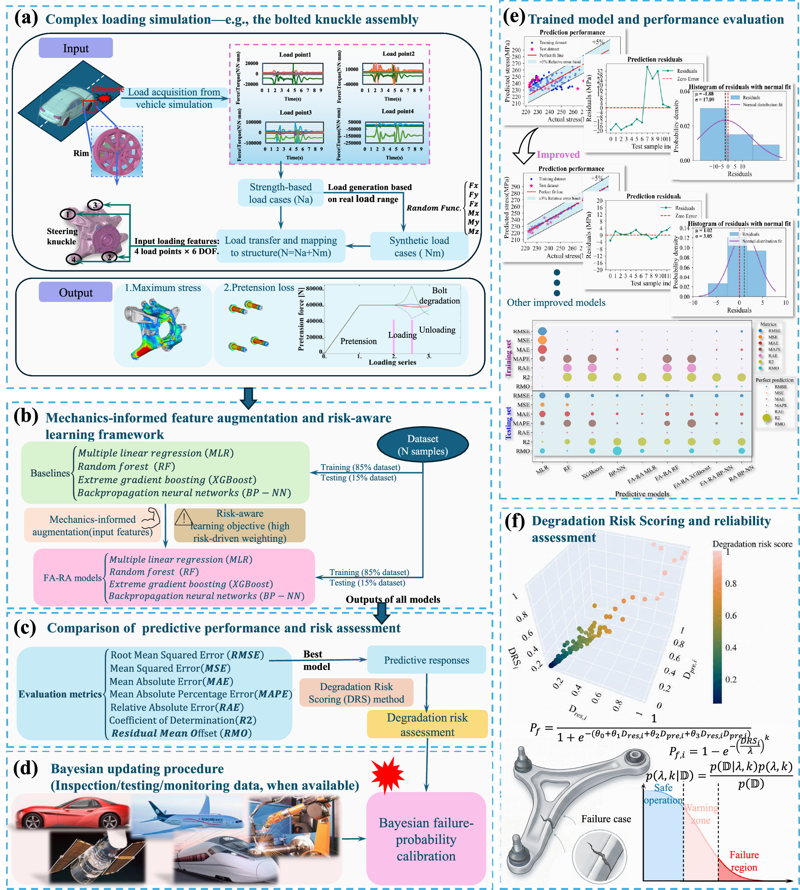

结合贝叶斯校准的力学启发风险感知多轴结构可靠性学习
Mechanics-informed risk-aware learning for multiaxial structural reliability with Bayesian calibration
Communications Engineering
全文精读已完成 · 原文有缺项
资料核对说明
- P10 · 参考文献36原页仅列作者、题名、“IEEE Access, (2025)”，未提供卷号、页码或文章号，亦无DOI。属于原页书目信息缺项，不是无法识读；影响该不均衡数据综述的准确定位，不直接改变本文实验结果或公式结论。
依据本轮全文阅读笔记，论文面向多轴载荷耦合与高风险样本不足，结合多项式—谐波特征增强、Weibull风险重加权和退化风险评分，预测转向节应力及螺栓预紧力损失。摘要报告线性回归R²由0.37升至0.96，RMSE降低67%[P1]。其价值在于将响应预测连接到风险排序；但验证来自模拟数据，评分不等于失效概率，贝叶斯校准仍需观测支持[P4、P5]。

查看大图图解：多体动力学和有限元提供载荷响应，力学特征增强与风险感知学习建立预测模型；退化风险评分随后通过贝叶斯校准关联失效概率。
依据论文全文整理。解读与建议不代表作者结论。 论文依据 1
中文导读
依据本轮全文阅读笔记，论文面向多轴载荷耦合与高风险样本不足，结合多项式—谐波特征增强、Weibull风险重加权和退化风险评分，预测转向节应力及螺栓预紧力损失。摘要报告线性回归R²由0.37升至0.96，RMSE降低67%[P1]。其价值在于将响应预测连接到风险排序；但验证来自模拟数据，评分不等于失效概率，贝叶斯校准仍需观测支持[P4、P5]。
阅读建议推荐重点阅读特征增强、风险加权与退化评分的衔接方法，适合结构可靠性及智能运维研究；不宜将其视为已完成现场概率校准或生成式设计验证的成果[P4、P6、P8]。
- 研究问题
- 【论文原文】研究针对非线性载荷耦合、失效关键样本不均衡和可解释性不足，原文概括为“nonlinear load couplings”[P1]。预测对象同时涵盖转向节应力与连接预紧力退化，因而不能只关注平均误差，还需关注上尾响应及两类退化的共同影响[P2、P4]。
- 方法与路线
- 【论文原文】以多体动力学和有限元生成120个样本，将24维载荷扩展为372维多项式—谐波特征，并以Weibull函数加权训练[P5、P6]。四类回归模型预测应力与预紧力损失，再构建DRS；概率映射以观测可用为条件，原文明确“when available”[P3、P7、P8]。
- 创新与比较
- 【解读】值得关注的是力学特征、上尾样本权重与双退化评分的组合，而非单纯增加模型复杂度。作者称增强表示为“physics-aligned representation”[P3]，使透明线性模型表达非线性交互；现有资料支持这一方法特色，但不足以确认各组件的首创性或普遍优越性。
- 证据与发现
- 【论文原文/摘要】MLR的R²由0.37升至0.96，RMSE降低67%[P1]；测试RMSE由9.96降至3.22，螺栓退化预测总体R²=0.90[P2]。SHAP主导特征涉及LP2、LP4交互[P4]。这些支持模拟域内的预测改善，不构成现场失效概率已获验证的证据。
- 局限与边界
- 【论文原文与资料边界】验证仅限模拟转向节[P4]。P10参考文献36缺卷页、文章号和DOI，影响定位而非实验结论。P3—P9相关补充方法、表图及校准细节未提供，无法核验实现与概率验证；P5工况编号对应尚不明。公式乱码已纠正，并非原文件公式缺项。 原文核对：[P10] 参考文献36原页仅列作者、题名、“IEEE Access, (2025)”，未提供卷号、页码或文章号，亦无DOI。属于原页书目信息缺项，不是无法识读；影响该不均衡数据综述的准确定位，不直接改变本文实验结果或公式结论。
- 方向关联
- 【解读】DRS可作为智能运维中的检查优先级指标，原文提到“inspection prioritization”[P3]；应力与连接退化双输出也能辅助结构设计比较。但论文没有展示生成式设计闭环。可靠性应用还须区分脆弱性评分与校准概率，并核查系统乘积公式的独立性依据[P2、P8]。
- 后续研究建议
- 【建议】先核对补充材料与公开代码，检查二次特征计数、载荷区间扩展和百分数转比例的实现[P6、P8、P9]；再通过构件试验或监测数据验证上尾预测，并实施概率校准。建议补充跨结构测试及相关失效建模；这些是后续研究设想，不是作者已完成的验证。
原文依据：P1、P2、P4、P3、P5、P6、P7、P8、P9、P10